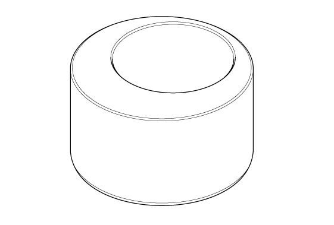

Mainshaft Thrust Clearance Adjustment (Except K20C1 (M/T)): Notes
WARNING: This page is about a different variant/trim than selected.
Special Tools Required
| Image |
Description/Tool Number |
 Courtesy of HONDA, U.S.A., INC. Courtesy of HONDA, U.S.A., INC.
|
Mainshaft Holder 07GAJ-PG20110 |
 Courtesy of HONDA, U.S.A., INC.
|
Mainshaft Base 07GAJ-PG20130 |